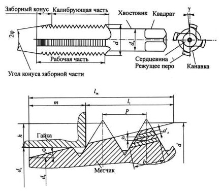
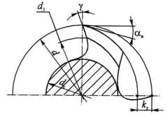
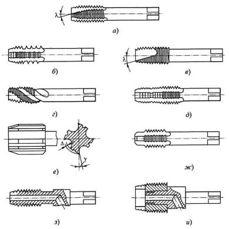
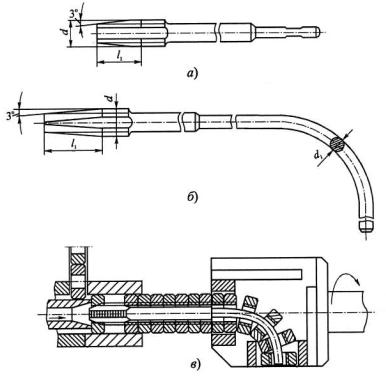
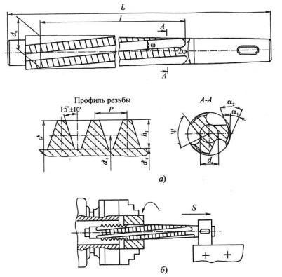

Метчики широко используются в машиностроении для нарезания резьбы в отверстиях заготовок и весьма разнообразны по конструкциям и геометрическим параметрам.
Метчик - это винт, превращенный в инструмент путем прорезания стружечных канавок и создания на режущих зубьях передних, задних и других углов. Для крепления на станке или в воротке он снабжен хвостовиком. Режущая часть метчика изготавливается чаще всего из быстрорежущей стали, реже из твердого сплава.
Условия резания при снятии стружки метчиком очень тяжелые из-за несвободного резания, больших сил резания и трения, а также затрудненных условий удаления стружки. Кроме того, метчики имеют пониженную прочность из-за ослабленного поперечного сечения. Особенно отрицательно это сказывается при нарезании резьбы в вязких материалах метчиками малых диаметров, которые часто выходят из строя из-за поломок, вызванных пакетированием стружки.
Достоинствами метчиков являются: простота и технологичность конструкции, возможность нарезания резьбы за счет самоподачи, высокая точность резьбы, определяемая точностью изготовления метчиков.
По конструкции и применению метчики делят на следующие типы:
1) ручные (слесарные) - с ручным приводом, изготавливаются комплектами из двух или трех номеров;
2) машинно-ручные одинарные или в комплекте из двух номеров -с ручным или станочным приводом;
3) машинные одинарные - со станочным приводом;
4) гаечные - для нарезания резьбы в гайках на специальных станках;
5) плашечные и маточные - для нарезания и, соответственно, калибрования резьбы в резьбонарезных плашках;
6) специальные - для нарезания резьб различных профилей: трапецеидальных, круглых, упорных и т.д., а также сборные регулируемые, метчики-протяжки, конические метчики и др.
Конструктивные элементы метчиков и геометрические параметры режущей части. Несмотря на большое разнообразие типов метчиков, они имеют общие основные части, конструктивные элементы и геометрию режущей части, которые рассмотрим ниже на примере метчиков для нарезания остроугольной крепежной резьбы, получивших наибольшее распространение на практике.
Основными частями метчика являются: режущая (заборная) и калибрующая части, стружечные канавки, число перьев и зубьев, хвостовик с элементами крепления. К геометрическим параметрам относятся: φ - угол заборного конуса, играющий роль угла в плане; γ и α - передний и задний углы на режущих кромках; ω - угол наклона винтовых стружечных канавок; λ - осевой угол подточки передней поверхности.
Режущая часть метчика выполняет основную работу по срезанию припуска, формированию профиля нарезаемой резьбы и удалению стружки из зоны резания. Она определяет точность резьбы и стойкость метчиков.
Для распределения припуска между зубьями режущая часть выполняется на поверхности усеченного конуса, называемого заборным, с углом φ наклона его образующей к оси. Если режущая часть получается путем срезания на конус резьбы исходного винта, то высота зубьев на нем переменная.
Передний угол γ у зубьев метчика - это угол между касательной к передней поверхности и радиусом, проведенным в точку режущей кромки, через который проходит основная плоскость. Строго говоря, этот угол изменяется по высоте зуба, так как точки режущих кромок лежат на разных диаметрах, однако для крепежных резьб с небольшой высотой резьбы перепад этих диаметров небольшой и изменение угла невелико.
Учитывая тяжелые условия работы метчика, передний угол , как правило, берут положительным. Для обработки сталей средней твердости рекомендуется брать угол γ = 12...15°, для хрупких материалов (чугун, бронза, латунь), а также для твердой стали γ = 0...5°, для цветных металлов и сплавов γ = 16...25°.
Задний угол αв на главных вершинных кромках - это угол между вектором скорости резания, через который проходит плоскость резания, и касательной к задней поверхности. Он создается путем затылования вершинных режущих кромок зубьев по архимедовой спирали. Рекомендуется брать αв = 6...12° (меньшее значение берется для ручных метчиков).
На боковых режущих кромках при генераторной схеме резания задние углы отсутствуют, так как толщины срезаемых слоев небольшие.
Форма стружечных канавок и перьев метчика оказывает большое влияние на его работоспособность. Объем канавок должен быть достаточным для размещения стружки, особенно при нарезании резьбы в глухих отверстиях. Форма канавки должна способствовать лучшему формированию и отводу стружки из зоны резания.
Несмотря на простоту конструкций метчиков, в практике нашли применение различные варианты их исполнения применительно к решению конкретных задач производства. Насчитывается более 12 вариантов исполнения машинных метчиков, часть из которых представлена на рисунке ниже.
Слесарные (ручные) метчики предназначены для нарезания резьб вручную. Они изготавливаются из инструментальных сталей комплектами из двух или трех метчиков, у которых резьба получена накаткой роликами. Класс точности метчика невысокий (4-й класс).
Машинные и машинно-ручные метчики используются на сверлильных, токарных и агрегатных станках для нарезания метрической резьбы М2...М24 в заготовках из стали прочностью до 800 МПа, латуни, чугуна, в сквозных и глухих отверстиях. Размеры таких метчиков стандартизованы. Материал режущей части метчиков - сталь Р6М5, резьба шлифованная и затылованная. Машинно-ручные метчики выпускаются комплектами из двух или трех номеров и могут использоваться также при нарезании резьбы вручную.
Метчики с шахматным расположением зубьев рекомендуется использовать для нарезания резьбы в вязких материалах, так как они исключают заклинивание витков инструмента в процессе резания вследствие уменьшения сил трения. При этом срезание зубьев метчика осуществляется обычно только на его калибрующей части. При обработке малопрочных вязких материалов зубья срезаются как на 1/3 длины заборной части, так и по всей ее длине. Практика показывает, что эффект уменьшения сил трения тем выше, чем больше шаг резьбы.
Метчики с укороченной стружечной канавкой или, как их часто называют, бесканавочные имеют короткие канавки переменной глубины с углом наклона дна канавки к оси ψ = 5...10° и осевым углом λ = 9...12°. По сравнению с обычными метчиками эти метчики из-за большого поперечного сечения более прочные. Длина канавок примерно равна удвоенной длине заборного конуса. Во избежание повышенного момента трения из-за отсутствия канавок на большей длине незатылованной калибрующей части делают большую обратную конусность по наружному диаметру (до 0,2 мм на 100 мм длины).
Такие метчики рекомендуется применять для нарезания резьб диаметром до 10 мм в сквозных отверстиях заготовок из труднообрабатываемых легированных сталей, вязких низкоуглеродистых сталей, цветных металлов и сплавов. Они обеспечивают также высокую точность и низкую шероховатость поверхности резьбы.
Метчики с винтовыми канавками, как было показано выше, рекомендуются для надежного удаления стружки в основном из глухих отверстий. При нарезании резьбы в сквозных отверстиях удаление стружки в направлении подачи метчика проще обеспечить путем подточки передней поверхности под осевым углом
Ступенчатые метчики имеют двойную режущую часть и позволяют реализовать в одном метчике любую комбинацию схем резания. Например, первая часть, имеющая занижение по профилю, может обрабатывать резьбу по генераторной схеме, а вторая - по профильной. При этом можно нарезать высокоточные резьбы. Эта конструкция удобна и для таких комбинированных схем, в которых одна часть выполняет резание, а вторая - выглаживание резьбы.
Метчики с режуще-выглаживающими зубьями имеют перья с режущими и ведущими участками. Канавки, разделяющие режущие и ведущие части метчика, служат для подвода СОЖ и выхода абразивного круга при шлифовании профиля резьбы.
Метчики с направляющими частями применяются для обработки деталей с точным взаимным расположением поверхностей нескольких отверстий. У метчиков для сквозных отверстий направляющая часть располагается впереди режущей части, а для глухих - после калибрующей части. Направляющая часть, расположенная после калибрующей части, имеет увеличенный диаметр и требует применения кондукторной втулки.
Метчики с внутренним подводом СОЖ имеют стойкость в 3...4 раза выше из-за лучших условий охлаждения, смазки и отвода стружки, но требуют специальных устройств для подвода СОЖ.
Метчики колокольного типа применяют при нарезании резьб в сквозных отверстиях крупных диаметров d = 50...400 мм в тяжелом машиностроении. Они выполняются цельными или составными. В последнем случае рабочая часть метчика насадная, состоящая из режущей и калибрующей частей. Внутренняя полость метчика обеспечивает подвод СОЖ и имеет большое пространство для размещения стружки. Число перьев у таких метчиков доходит до 16.
Гаечные метчики служат для нарезания сквозных резьб без свинчивания гаек путем их нанизывания на хвостовую часть. Для лучшего захода метчика в отверстие они имеют длинную заборную и короткую калибрующую части.
Из-за большой длины гаечных метчиков, затрудняющей их изготовление, особенно при шлифовании резьбы, их часто делают составными: отдельно изготавливают режущую и хвостовую части, а затем их соединяют сваркой трением, пайкой или с помощью резьбы.
Хвостовики гаечных метчиков изготавливают длинными прямыми или изогнутой формы. Метчики с изогнутыми хвостовиками применяют для нарезания резьбы в гайках на станках-автоматах с непрерывным циклом. Здесь заготовки гаек подаются из бункера в зону резания и после нарезания резьбы сходят по изогнутому хвостовику в лоток
Конические метчики. Особенность работы конических метчиков заключается в том, что нарезание резьбы происходит по всей длине метчика, равной длине резьбы. Калибрующая часть у конических метчиков отсутствует, что способствует появлению больших усилий резания. Нарезание резьбы, как правило, производится на станках с предохранительным устройством, срабатывающим в конце резания. Основные параметры метчиков подобны параметрам метчиков для цилиндрических резьб.
Метчик-протяжка позволяет нарезать в сквозных отверстиях резьбу любых профилей и длины, с любым числом заходов. Метчик-протяжка по сравнению с обычными метчиками и резьбовыми резцами обеспечивает повышение производительности в несколько раз при высокой точности и низкой шероховатости резьбы.
Нарезание резьбы обычно производится на токарном станке с n = 18...40 об/мин и v = 2...3 м/мин. Хвостовик метчика с помощью клина крепят на суппорте станка. Перед протягиванием заготовку надевают на метчик и зажимают в самоцентрирующем патроне станка (рис. 13, б) и приводят во вращение. При этом шпиндель станка включают на обратный ход и суппорт перемещается вправо с подачей на один оборот, равной шагу нарезаемой резьбы.
При нарезании резьбы в высокопрочных материалах рабочую часть метчика-протяжки делят на ступени. При этом каждая ступень имеет режущую и калибрующую части, а проточки между ступенями служат для выхода стружки.